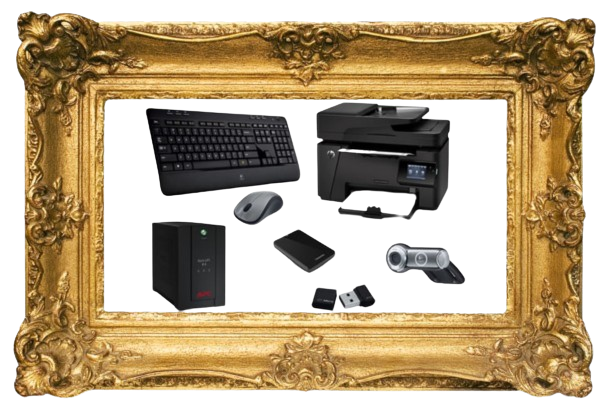

Randapparatuur

Randapparaten zijn apparaten die je aansluit op de computer, zoals toetsenborden, muizen en printers.
- Controllers: Besturen hoe randapparatuur met de computer reageert.
- Drivers: Software die ervoor zorgt dat het bestringssysteem de randapparatuur herkent en ermee kan werken.